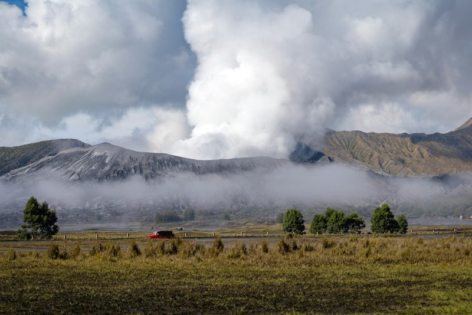
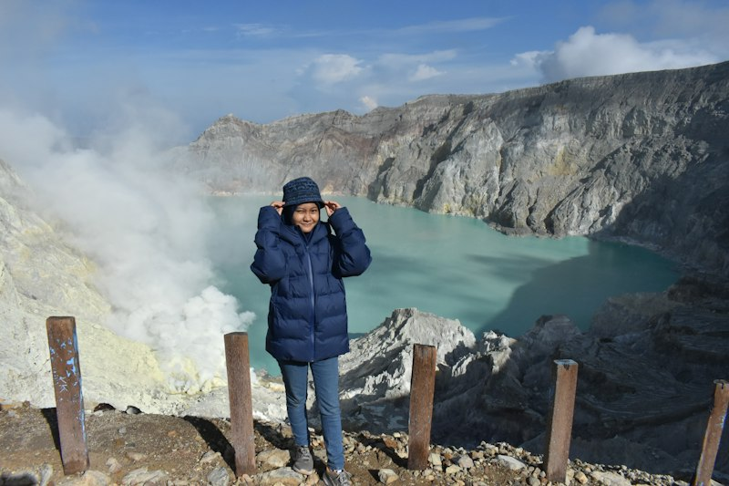
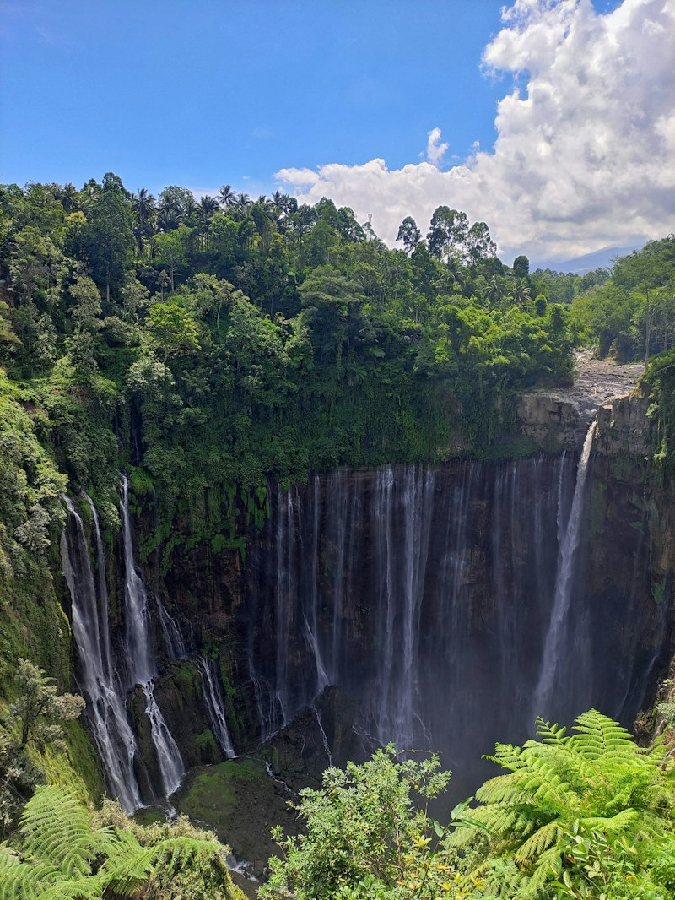

Berdiri di puncak Penanjakan menyambut semburat fajar, menembus kabut lautan pasir berbisik, dan saksikan nyala api biru abadi Kawah Ijen.
Explore Expeditions
📍 Travel tipsBerangkat pukul 00.30 dari Kota Malang atau Probolinggo untuk menghindari penumpukan antrean jeep di pintu masuk Wonokitri. Nikmati kopi jahe hangat sembari menunggu matahari terbit tepat di hadapan Gunung Semeru.
Fenomena Blue Fire hanya terlihat saat gelap sebelum fajar pukul 04.00 WIB. Jalur pendakian dari Paltuding sepanjang 3 km membutuhkan kondisi fisik prima dan masker khusus penyaring gas belerang alami.

🔥 TipsPenanjakan 1 · Kawah Bromo · Pasir Berbisik · Bukit Teletubbies
Paltuding · Kawah Biru · Hutan De Djawatan Benculuk

Sunrise Bromo · Air Terjun Madakaripura · Blue Fire Ijen